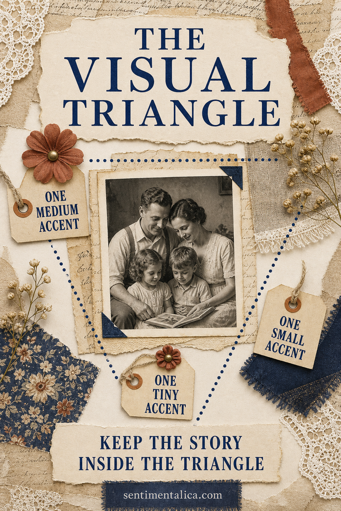
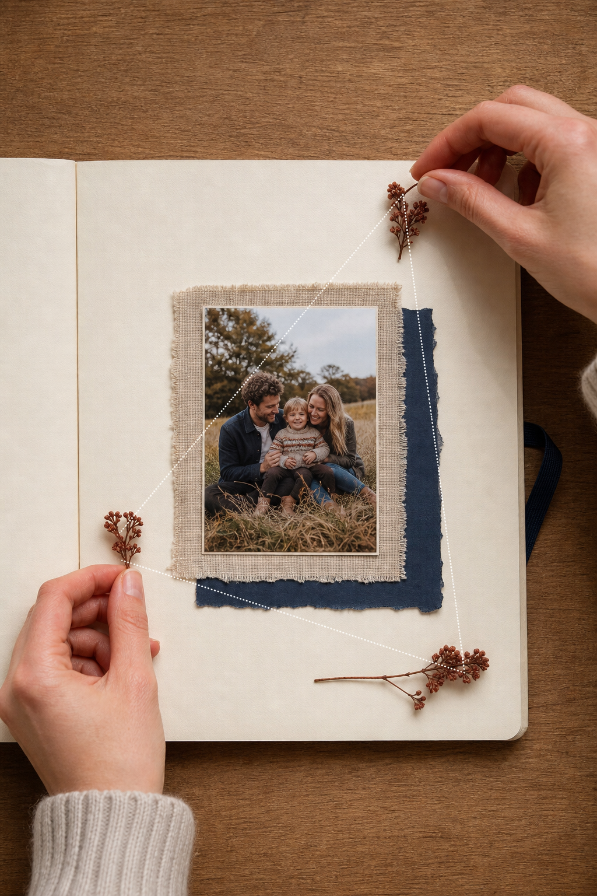

When a scrapbook layout feels flat, the problem is often not a lack of embellishment. The eye may simply have nowhere to travel. A visual triangle creates movement by repeating one detail in three separated places.

Start with the photograph
Place the photograph and its main paper layers first. Decide where the face, gesture, or important object sits. The triangle should support that focal point rather than form an obvious decorative border around it.
Choose one repeatable accent
Use a color, shape, or material that is already present in the photograph. Rust berries, navy paper, pearl buttons, or narrow lace can all work. Keep the three repeats related but not identical.
Make the points unequal
Use one medium accent near the photograph, a smaller one farther away, and the tiniest near the title or date. Equal decorations feel static. Unequal scale creates rhythm and prevents the page from looking arranged by formula.

Keep the widest point low
A low accent can visually support a portrait, while a smaller upper accent keeps the eye from falling off the page. If the photograph already sits low, reverse the balance and place the broadest detail above it.
Check the negative space
Step back and look between the three points. The empty area inside the triangle should contain the story: photograph, journaling, or title. If an accent pulls attention outside that area, move it closer or reduce its contrast.
Use color before adding objects
A triangle can be made from three tiny touches of the same pencil, ink, or paint. This is useful when the page already contains enough physical layers. A rust line, dot, and date may solve the composition without adding bulk.
Know when to stop
Cover two accents with your fingers. If the page becomes disconnected, the repetition is helping. If it looks calmer and stronger, remove one or make it quieter. Composition is a guide, not a requirement to decorate.
The visual triangle works because it feels natural: the eye notices a relationship, travels between the points, and returns to the memory at the center.
Image note: Some visuals in this article were created with AI and curated by Sentimentalica.